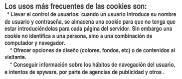

Esta vulnerabilidad es un fallo en el sistema de validación de HTML incrustado y consiste en inyectar código HTML y Javascript donde no debería haberlo y así conseguir algún provecho, normalmente esta vulnerabilidad se usa para el robo de cookies, para hacer phishing y desfaces en los foros.
Es muy difícil de encontrar una vulnerabilidad de este tipo. Se encuentra en los foros, libros de visita y webs que se puedan modificar por medio de formularios.
Cuando alguien entre a la parte del foro donde se ha inyectado el código, se ejecutara en su navegador y hará lo que se desee.
Algunos usan esta vulnerabilidad para hacer un deface usando una etiqueta div> que cubra toda la web o con un script que la redireccione a tu sitio.
Este tipo de XSS es muy fácil de encontrar en motores de búsqueda.En esta el código se inyecta a través de formularios, URL, cookies, programas en Flash o incluso en vídeos.
Esta vulnerabilidad es mas difícil sacarle provecho ya que tenemos que conseguir que alguien entre en el enlace malicioso, mas adelante se vera lo que es un enlace malicioso.
Presiona ver mas para ver la descripcion del metodo RFI.
Una cookie es un fragmento de información que se almacena en el disco duro del visitante de una página web a través de su navegador, a petición del servidor de la página.
Esta información puede ser luego recuperada por el servidor en posteriores visitas .
Aunque las cookies deben ser almacenadas y enviadas de vuelta al servidor sin modificar, un atacante podría modificar el valor de las cookies antes de devolverlas.
Si, por ejemplo, una cookie contiene el valor total de la compra de un usuario en un sitio web, cambiando ese valor el servidor podría permitir al atacante pagar menos por su compra.
Este proceso se denomina falsificación de cookies (cookie poisoning).
A conitnuacion se mensionarán algunos usos más frecuentes de las cookies

Sabemos que hay webs que nos muestran las ip de los clientes que se conectan....
Pero existen fallos de programación en muchas de ellas que permiten engañar al sistema indicando una ip falsa.
Esta técnica se conoce como http spoof.
Por inyección SQL entendemos el acto de insertar una serie de sentencias SQL en una 'consulta' mediante la manipulación de la entrada de datos de una aplicación, con la que podemos conseguir validaciones de entrada, extracción y modificación de datos, así como el compromiso total del host.
Cada tipo de base de datos tiene sus propias peculiaridades y métodos de inyección, dadas las diferencias inherentes de las mismas y del lenguaje en el que se implementan las consultas.
El modo de funcionamiento de este tipo de ataque se basa en conseguir que los comandos se ejecuten con la desventaja de no poder visualizar ninguno de los resultados .
Esta falta de muestreo de resultados se produce por el tratamiento total de los códigos de error.
El objetivo del Blind SQL es detectar esos cambios para poder averiguar las información extraida en función de esos cambios .
Comprueba tu aprendizaje a partir de estos cortos test
¿Aprendiste lo necesario sobre esta sección?, entonces realiza estos test y corroborra tu aprendizaje.

Instrucciones
Desliza el nivel que deseas realizar hacia la izquierda y empieza tus test.